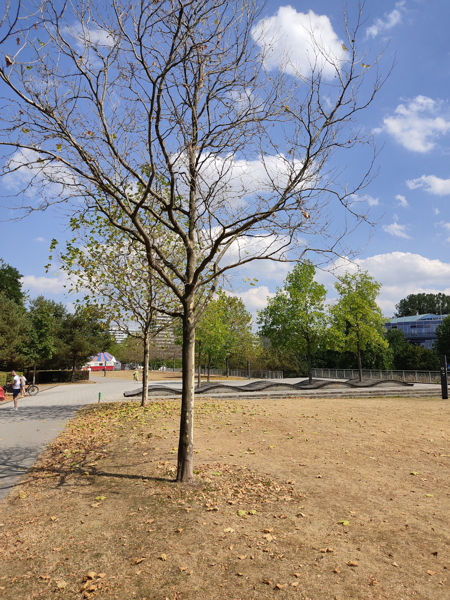
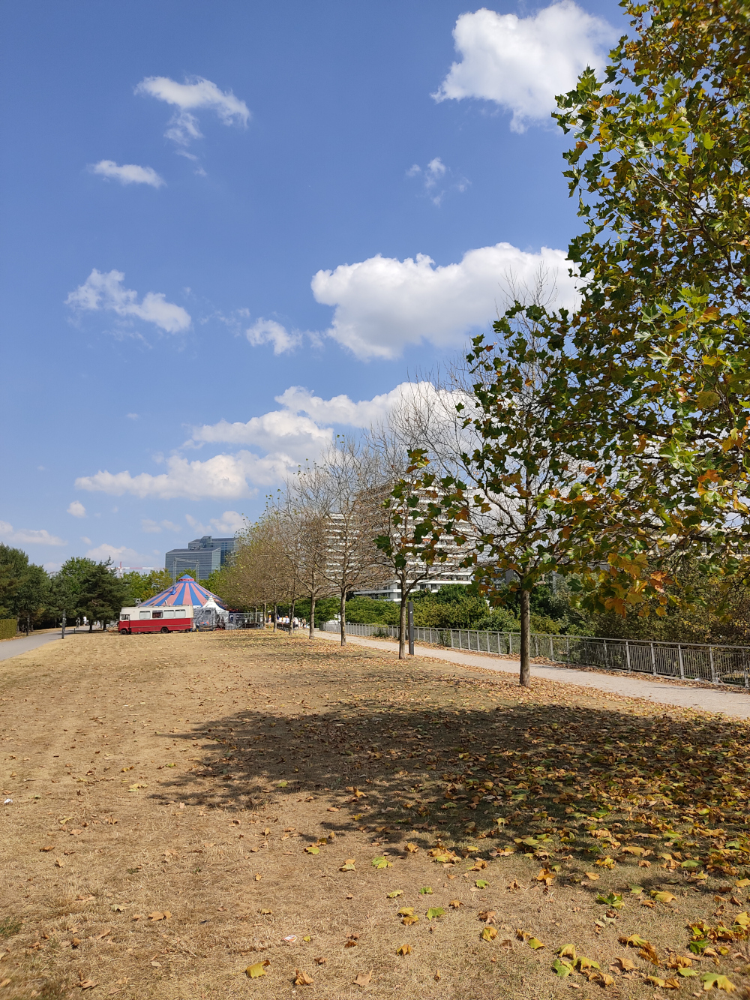
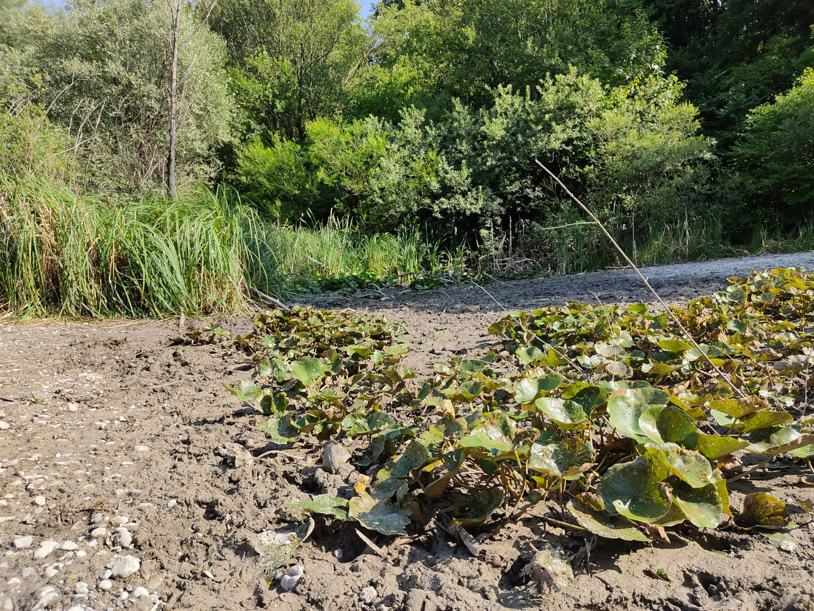
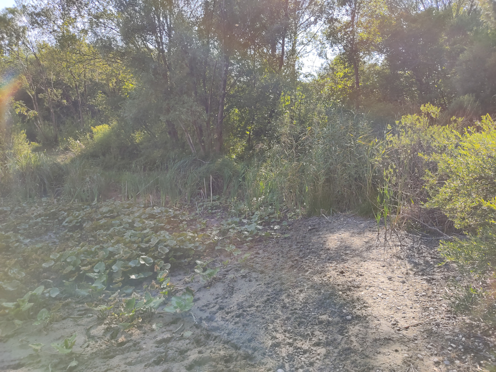
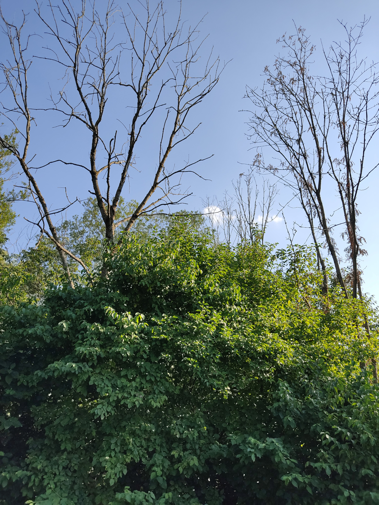
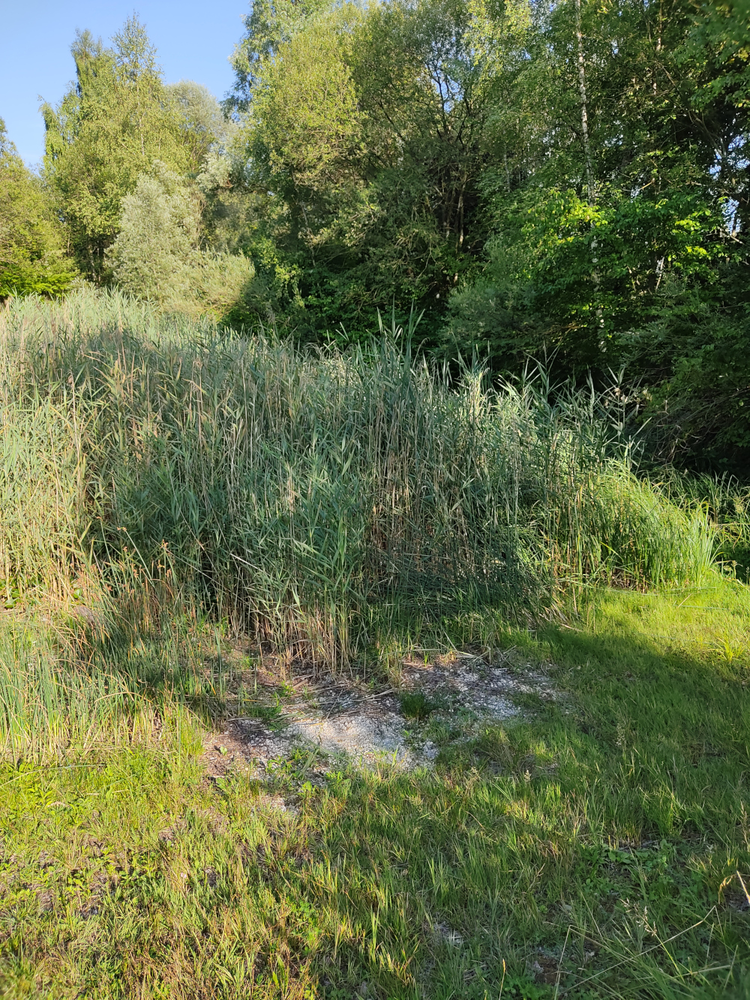
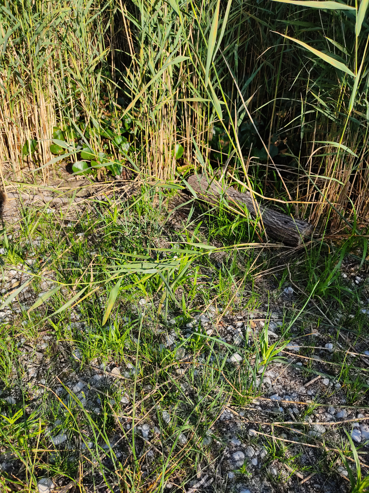
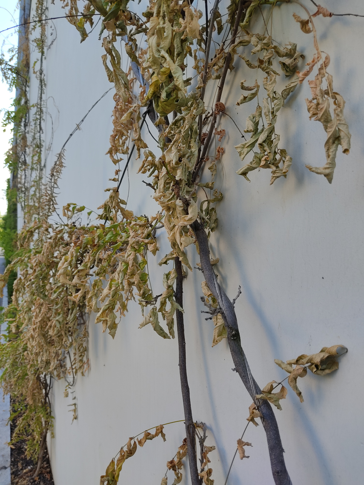

München trocknet aus.
Diese Schlagzeile ist vor knapp einem Monat genauso in der tz erschienen. Regenfälle Ende Juni haben das Defizit aber wieder aufgefüllt.
Sieht man auf die aktuelle Daten des Wetterkontors dann haben wir bis 23.7 am Münchner Flughafen gerade mal 25% der üblichen Juli Niederschläge, gleichzeitig Temperaturen über 30 Grad in Reihe.
Haben andere Gegenden zum Wochenende wenigstens ein wenig von den Gewitterschauern abbekommen, die in Österreich für Unwetter gesorgt haben, so haben die Wolken konsequent einen Bogen um München und das Umland gemacht.
Die Konsequenzen sind leider traurig, wie die folgenden Schnappschüsse zeigen.
Petuelpark
Die Platanen sehen so aus wie sonst Ende Oktober. Herbst
 Am See
Ein knapper Meter hat der See verloren, so dass die Teichrosen auf dem Schlamm sitzen.
 Die Eschen rundrum sind inzwischen abgestorben.
Am Teich
Flache Grundwasserteiche sind praktisch verschwunden. Nur Schilf und ein paar Teichrosen zeigen, dass hier mal Wasser war.
 Irgendwo im Nirgendwo
Selbst wärmeliebenden Pflanzen wie dem Blauregen macht die Trockenheit zu schaffen.
